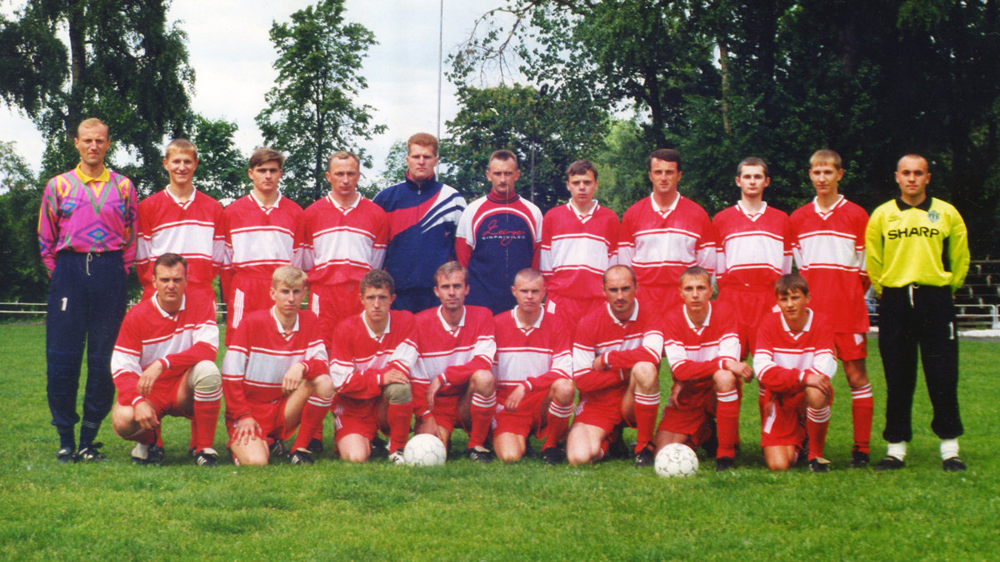

Начиная с 1997 года, в Слуцке возник новый центр, который объединил местных любителей футбола. Им стал спорткомплекс Городского дворца молодёжи, построенного Сахарорафинадным комбинатом. По инициативе инструктора-методиста по физической культуре и спорта Олега Караневского при спорткомплексе была создана футбольная секция. Сначала она объединяла работников комбината. Позже подключились и слуцкие футболисты, игравшие в прежние годы. Сформировалась команда, которая приняла участие в турнирах по мини-футболу любительской Фан-лиги.
Успехи и частичная поддержка Сахарорафинадного комбината позволили команде уже с названием «Слуцксахар» в 1998 году принять участие в первенстве Минской области (вторая лига). Первая игра состоялась 7 июня. «Слуцксахар» со счётом 4:1 переиграл «Звезду» из Марьиной Горки. С этого момента клуб и ведёт отсчёт своей истории. Заняв первое место по итогам сезона, случчане уже со следующего года играли на первенстве Минской области, но в первой лиге. Результаты были разные: 1999 год – 6-е, 2000 – 9-е, 2001 – 5-е места. А вот 2002 год принёс команде победу, а вместе с ней и право выступать на республиканском уровне.
Однако, «Слуцксахар» по финансовым причинам путёвкой во вторую лигу воспользоваться не смог. Пришлось снова с переменными успехами играть в первенствах Минской области (2003 – 2007 годы). По инициативе нового руководителя Сахарорафинадного комбината Николая Павловича Прудника, команде стала оказываться регулярная финансовая поддержка. Была поставлена и конкретная задача – выйти во вторую лигу Чемпионата Республики Беларусь. Сделать это удастся по результатам сезона-2007 – «Слуцксахар» занял первое место в первенстве области.
Три года игры во второй лиге потребовалось команде, чтобы пробиться на более высокий уровень. Поступь клуба была такова: 2008 год – 5-е, 2009 - 4-е, 2010 – 2-е место. Именно успех 2010 года обеспечил «Слуцксахару» выход в первую лигу Чемпионата Республики Беларусь. Болельщиками и общественностью Слуцка этот результат был воспринят как небывалый успех.
Впрочем, он ко многому обязывал – необходимо было привести местную футбольную инфраструктуру в соответствие с требованиями «Ассоциации БФФ». На городском стадионе началось строительство административного здания, было расширено футбольное поле, проводилась реконструкция трибун. Изменилось и название клуба - вместо ФК «Слуцксахар» он стал именоваться СФК «Слуцк».
Новая команда была встречена старожилами первой лиги с прохладцей. По отзывам самих футболистов «Слуцк» в сезоне-2011 никто серьёзно не воспринимал. Все полагали, что его представительство во втором эшелоне не более чем случайность. Тем не менее, слуцкая команда по результатам чемпионата показала более чем достойный результат, заняв 5-е итоговое место.
Уже следующий сезон СФК «Слуцк» провёл в качестве крепкого «середняка» лиги. Соперники поняли - со слуцкой командой придётся считаться, что и подтвердил ход чемпионата. Довольно длительный отрезок времени «Слуцк» находился в лидирующей группе и лишь неудачи во второй половине чемпионата передвинули клуб на 5-е место.
К сезону-2013 клуб готовился особо. Тренерский штаб значительно усилил состав команды, а руководство Сахарорафинадного комбината поставило задачу – быть в тройке призёров. Ещё накануне Чемпионата футбольные аналитики, представляющие различные СМИ, довольно активно обсуждали шансы команд первой лиги на успех. По их оценке «Слуцк» был в числе лидеров, среди них называлась и «Городея».
Соперничество этих команд и стало главной интригой чемпионата. Не совсем удачно начав сезон, «Слуцк» постепенно набирал обороты, постоянно дыша в спину своему давнему сопернику по «сахарному дерби». Уже во втором круге, случчане захватили лидерство и до конца сезона уверенно удерживали его. Победная точка была поставлена 16 ноября 2013 года. «Слуцк» переиграв со счётом 1:0 «Витебск», досрочно, за один тур до окончания сезона, стал Чемпионом первой лиги.
Древний белорусский город с уникальным прошлым усилиями СФК «Слуцк» вписал в свою историю ещё одну славную страницу. Давняя мечта случчан о большом футболе стала реальностью. Впрочем, местные поклонники популярной игры одновременно с победой осознали: предстоит пройти ещё более сложный путь, нежели тот, который уже преодолён героическими усилиями.
Путевку в элитный дивизион белорусского футбола «Слуцк» завоевал заслуженно. 2014 год. «Слуцк» – абсолютный новобранец высшей лиги – начинает свою дорогу в большом футболе с победы над гродненским «Неманом» - гол Николая Зенько открывает счет голам «Слуцка» в элитном дивизионе страны по футболу. Безголевая ничья с «Динамо-Минск», победы над могилевским «Днепром», «Минском» и «Белшиной». «Слуцк» вряд ли можно назвать проходной командой. По итогам дебютного сезона 2014 – слутчане на 9 строчке турнирной таблицы высшей лиге. Второй год в элите белорусского футбола не задался – слутчане долгое время замыкали турнирную таблицу: футбольные эксперты диагностировали у «Слуцка» «синдром второго сезона», свойственный командам, выходящим в высшую лигу. Но на финише «Слуцк» выдал серию беспроигрышных матчей и разместился на 11 строчке турнирной таблицы. Третий сезон в высшей лиге пророчил «Слуцку» место в первой части турнирной таблицы, однако сезон не задался старта и как итог 12-е место в чемпионате.